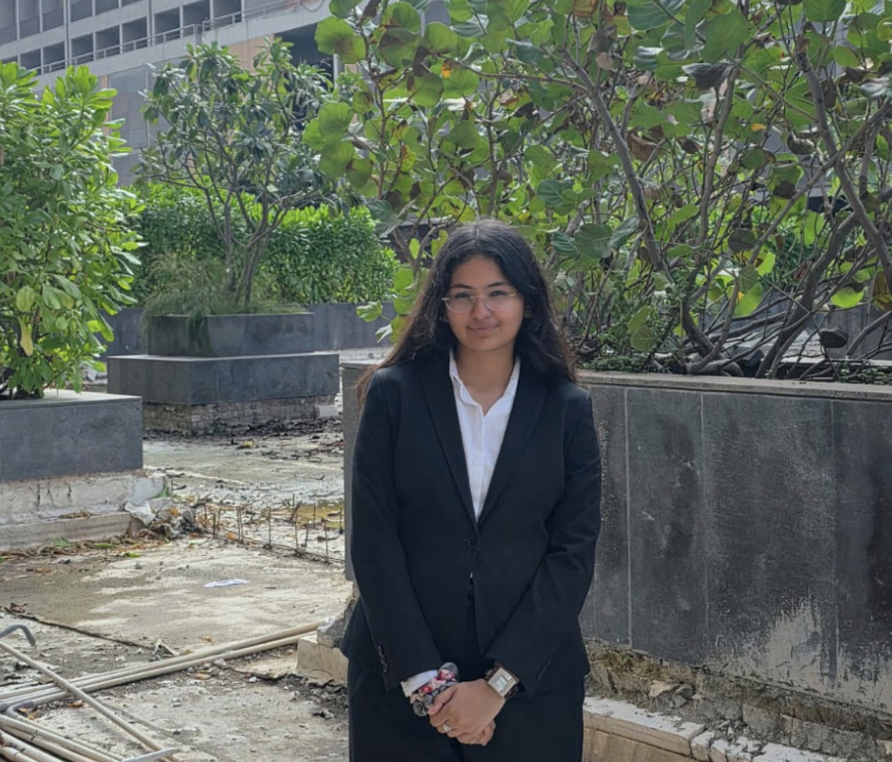

2026 — 2029
BBA in Digital Business and Entrepreneurship
Indian Institute of Management Bangalore
Online undergraduate programme · 2026–2029
BUSINESS · COMMUNITY · CULTURE
I’m Aakanksha, a business student at Nirma University and IIM Bangalore. I enjoy learning about business and finding ways to contribute beyond the classroom.
aakankshapatel07@gmail.com
At Nirma, I’m studying an integrated BBA–MBA. At IIM Bangalore, I’m studying digital business and entrepreneurship.
01 / EDUCATION
2026 — 2029
Indian Institute of Management Bangalore
Online undergraduate programme · 2026–2029
Year 2 · 3-year programme
Institute of Management, Nirma University
Integrated programme · 2025–2030
2025 · Class XII
85.4%
2023 · Class X
94%
02 / EXPERIENCE & LEADERSHIP
COMMUNITY
I’m a member of the Student Advisory Committee at Nirma University (2025–2028).
INTERNSHIPS
My internship experience includes accounts and marketing work with NGOs, including Red Cross Ahmedabad.
PUBLIC SPEAKING
I received a High Recommendation at NSMUN (2024) and a Special Mention at ILMUN (2023).
YOUNG MANAGERS PROGRAMME
I completed the three-year Young Managers Programme at Abacus the Academy (2018–2021).
COMMUNITY INITIATIVE
I was associated with Prayas charity exhibitions in 2018, where sales exceeded ₹10,000.
03 / BEYOND ACADEMICS
I trained in Kathak for five years. It gave me a strong foundation in classical Indian dance, rhythm, discipline, and stage presence.
In 2023, I was selected to perform at the Government-affiliated Vibrant Gujarat summit.
In 2019, I represented Gujarat in Women’s Chess and secured state-level selection.